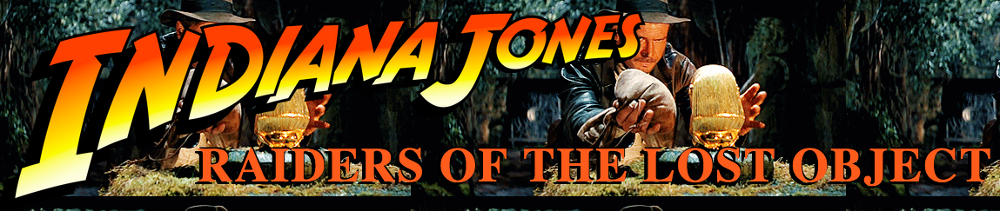

- student: DBC
- mkt mgr + product liaison: TRLA
- timcannady@gmail.com
- twitter.com/tcannadysf
- linked.com/in/timcannady
- github.com/timcannady
JavaScript
Indiana JavaScript!
Indiana Jones: Raiders of The Lost Object

We were tasked with creating a simple game using JavaScript. We've already made a BINGO game using Ruby, so the lesson here was to specifically use JS objects as the foundation. The minimum requirements were to:
- create at least two objects with properties
- create at least two functions that interact with those objects by adding or modifying the object's properties
- call each function
- be runnable via command line
For example, one object could be a knight with key-value pairs for health points, or x-y coordinates on a map. And another could be a dragon! Exta credit was transform it into a web-based game. We're yet to learn DOM manipulation but have a textbook that turned out to be pretty awesome.
I followed the suggestion to use a simple MVP and only add features as time and framework allowed. And rightfully so. I'm finding it's easy to put the cart before the horse when building something from the ground up. That said, it evolved from a set of JavaScript flashcards, to fighting a monster (via flashcards, of course), and finally to Indiana JavaScript! Feature creep is real. For reals.
I've mentioned one of my favorite parts of learning web development is to put it all together. It's fun to code programs and build static web pages. But it's when it all comes together that I get that feeling of accomplishment. Maybe it's like practicing free-throws versus playing in a game.
Like playing in a game: you don't always win. But this journey has been less about winning and more about enjoying the sport. That, and learning a bunch of stuff along the way! Some highlights:
- DIV placement: adding borders really helps make sense of what's going on
- OOP: using functions with single-responsibility
- UI/UX: and at the cost of changing a bunch of interals for every tweak
- DOM manipulation: and not just for chaning this to that, but also with loops and iteration (see: the trophies)
- creating transparent PNGs: because you gotta be fancy
- managing multiple files
- adding functions to buttons
- adding audio
Some next steps could be to add different tests for the user to select (Ruby, JS, general trivia). It seems objects make that pretty easy. It could also be fun for the user to change the theme, for example Goonies or Pirates of the Caribbean. It seems like kitschy feature for relatively little work.
Enough reflection. Thanks for reading, and click here to enter the temple.